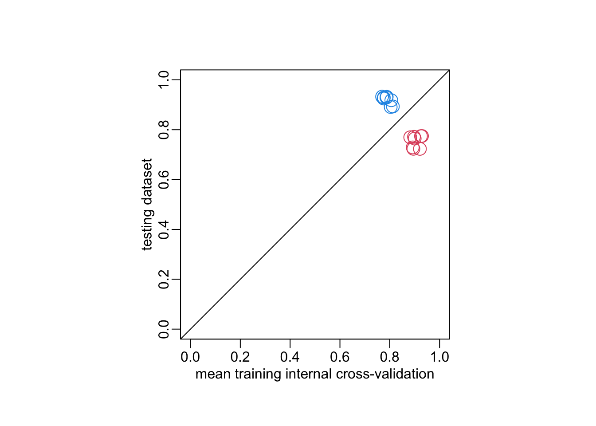

data_path <- paste0(Sys.getenv("HOME"), "/Library/CloudStorage/",
"OneDrive-OxfordUniversityClinicalResearchUnit/",
"GitHub/choisy/typhoid/")Classification workflow
Limitations and suggestions
Limitations:
- Small datasets
- One of the datasets has very low prevalence 6%
- The fever variable is different in the two datasets
- We are trying to predict the result of culture when we do know that it depends on other causes that those in our variables (i.e. the quantity of blood used)
- The durations of symptoms are questionable has it depends on the stage of the disease at which the patient sees the doctor
Suggestions:
- Switch the role of the 2 datasets in terms of training and testing
- Proceed in 2 steps: first build the best possible model that will used as a performance reference. Then build a clinical score and measure its performance by comparing with the best possible model
Global parameters
Package
library(dplyr)
library(purrr)
library(rsample)
library(recipes)
library(themis)
library(parsnip)
library(workflows)
library(yardstick)
library(tune)
library(finetune)
library(dials)Utilitary functions
Functions for caching long simulations results:
file_exists <- function(x) file.exists(paste0(data_path, "cache/", x))
readRDS2 <- function(x) readRDS(paste0(data_path, "cache/", x))
saveRDS2 <- function(object, file) saveRDS(object, paste0(data_path, "cache/", file))A function that transforms a logical vector into a factor vector (with the correct number of levels):
logical2factor <- function(x) factor(x, c("FALSE", "TRUE"))This function builds an rsplit object by combining independent train and test data sets:
make_splits2 <- function(train, test) {
make_splits(list(analysis = seq(nrow(train)),
assessment = nrow(train) + seq(nrow(test))),
bind_rows(train, test))
}Tuning the collect_metrics() function:
collect_metrics2 <- function(...) {
collect_metrics(...) |>
select(-.config, -.estimator)
}Tuning the last_fit() function:
last_fit2 <- function(wf, split, metrics) {
tmp <- wf |>
last_fit(split, metrics = metrics) |>
collect_metrics2() |>
select(-.metric)
wf |>
fit_resamples(vfold_cv(training(split)), metrics = metrics) |>
collect_metrics2() |>
bind_cols(tmp)
}Reading the clean data
The Nepal dataset:
nepal <- paste0(data_path, "clean_data/nepal.rds") |>
readRDS() |>
mutate(across(c(cough, diarrhea, vomiting, abdominal_pain, constipation, headache),
as.logical),
across(c(age, platelets), as.numeric),
across(fever, ~ .x > 2),
across(where(is.logical), logical2factor)) |>
select(-starts_with("score")) |>
select(-fever) |>
na.exclude()The Cambodia and Bangladesh dataset:
cambodia_bangladesh <- paste0(data_path, "clean_data/cambodia_bangladesh.rds") |>
readRDS() |>
mutate(across(fever, ~ .x > 2),
across(where(is.logical), logical2factor)) |>
select(-country) |>
select(-fever) |>
na.exclude()Checking the consistency of the levels of the factors between the two datasets:
levels_nepal <- nepal |>
select(sex, IgM, CRP) |>
map(levels)
levels_cambodia_bangladesh <- cambodia_bangladesh |>
select(sex, IgM, CRP) |>
map(levels)
identical(levels_nepal, levels_cambodia_bangladesh)[1] TRUErm(levels_nepal, levels_cambodia_bangladesh)The metric
We use the ROC AUC to measure the performance of the models:
the_metric <- metric_set(roc_auc)The data splits
Let’s consider the two of the two data sets:
splits1 <- make_splits2(cambodia_bangladesh, nepal)
splits2 <- make_splits2(nepal, cambodia_bangladesh)The models
Let’s consider 5 types of models:
logistic_regression <- logistic_reg("classification", "glm")
logistic_regression_lasso <- logistic_reg("classification", "glmnet",
penalty = tune())
logistic_regression_elasticnet <- logistic_reg("classification", "glmnet",
penalty = tune(), mixture = tune())
random_forest <- rand_forest("classification", "randomForest")
random_forest_tuned <- rand_forest("classification", "randomForest",
mtry = tune(), trees = tune(), min_n = tune())Functions to tune workflow
The function that tunes 1 model:
workflow_tune <- function(model, split, size = 25, metric = the_metric,
mtry_range = c(1, 10)) {
check_mtry <- function(x) {
if (x$component[1] == "rand_forest") {
if (any(map_chr(x$object[[1]]$range, class) == "call")) {
return(update(x, mtry = mtry(mtry_range)))
}
}
x
}
training_data <- training(split)
wkflw <- recipe(culture ~ ., training_data) |>
step_unorder(all_ordered_predictors()) |>
step_dummy(all_factor_predictors()) |>
step_smotenc(culture) |>
workflow(model)
grid <- wkflw |>
extract_parameter_set_dials() |>
check_mtry() |>
grid_space_filling(size = size)
resamples <- vfold_cv(training_data)
grid_search <- wkflw |>
tune_grid(resamples = resamples, grid = grid, metrics = metric)
iterative_search <- wkflw |>
safely(tune_bayes)(resamples = resamples, initial = grid_search, metrics = metric)
select_best2 <- function(...)
select_best(..., metric = names(attributes(metric)$metrics))
output <- list(grid_search = finalize_workflow(wkflw, select_best2(grid_search)))
if (is.null(iterative_search$result)) {
return(output)
} else {
output$iterative_search <- finalize_workflow(wkflw,
select_best2(iterative_search$result))
}
output
}#workflow_tune(logistic_regression_lasso, splits1)A wrapper around the above function to tune several models at once:
workflows_tune <- function(models, split, size = 25, metric = the_metric,
mtry_range = c(1, 10)) {
models |>
map(workflow_tune, split, size, metric, mtry_range) |>
unlist(FALSE) |>
unname()
}Function that makes workflows without tuning
workflow_no_tune <- function(model, splits) {
recipe(culture ~ ., training(splits)) |>
step_dummy(all_factor_predictors()) |>
step_smotenc(culture) |>
workflow(model)
}Models comparisons
Making all the workflows:
make_workflows <- function(splits) {
non_tuned_workflows <- map(list(logistic_regression, random_forest),
workflow_no_tune, splits)
tuned_workflows <- workflows_tune(list(logistic_regression_elasticnet,
logistic_regression_lasso, random_forest_tuned),
splits)
list(non_tuned_workflows, tuned_workflows) |>
unlist(FALSE)
}Takes 6’50”:
workflows <- map(list(splits1, splits2), make_workflows)Takes 44”:
workflows_performances <- map2(workflows, list(splits1, splits2),
~ map(.x, last_fit2, .y, the_metric)) |> bind_rows()workflows_performances# A tibble: 16 × 5
.metric mean n std_err .estimate
<chr> <dbl> <int> <dbl> <dbl>
1 roc_auc 0.900 10 0.0266 0.765
2 roc_auc 0.921 10 0.0219 0.723
3 roc_auc 0.882 10 0.0298 0.770
4 roc_auc 0.897 10 0.0232 0.771
5 roc_auc 0.925 10 0.0195 0.774
6 roc_auc 0.929 10 0.0157 0.775
7 roc_auc 0.895 10 0.0297 0.723
8 roc_auc 0.892 10 0.0255 0.729
9 roc_auc 0.775 10 0.0189 0.925
10 roc_auc 0.806 10 0.0160 0.918
11 roc_auc 0.776 10 0.0181 0.929
12 roc_auc 0.787 10 0.0240 0.929
13 roc_auc 0.769 10 0.0306 0.932
14 roc_auc 0.788 10 0.0197 0.932
15 roc_auc 0.804 10 0.0152 0.891
16 roc_auc 0.812 10 0.0124 0.893opar <- par(pty = "s")
with(workflows_performances, {
min_val <- min(mean, .estimate)
plot(mean, .estimate, col = rep(c(2, 4), each = 8), cex = 2,
xlim = c(min_val, 1), ylim = c(min_val, 1),
xlab = "mean training internal cross-validation", ylab = "testing dataset")
})
abline(0, 1)
box(bty = "o")par(opar)opar <- par(pty = "s")
with(workflows_performances,
plot(mean, .estimate, col = rep(c(2, 4), each = 8), cex = 2,
xlim = 0:1, ylim = 0:1,
xlab = "mean training internal cross-validation", ylab = "testing dataset"))
abline(0, 1)
box(bty = "o")
par(opar)